Data Structures & Algorithms
Time Compexity
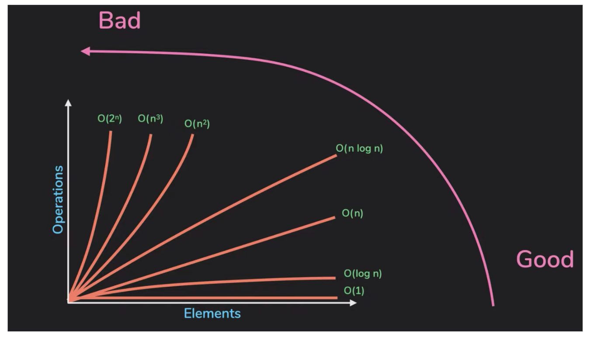
Cheat Sheet
Examples
O(1):
linear operation
hashmap lookup
O(n):
for loop
O(n2):
loop inside of a loop
O(log n):
Binary Search: input size is divided in half for each loop
Heaps
O(nlog n)
sort array
Linear Time Complexity

Array
Structure of fixed-size, which can hold items of the same data type. - It can be an array of integers, an array of floating-point numbers, an array of strings or even an array of arrays (such as 2-dimensional arrays).
Arrays are indexed, meaning that random access is possible.
Traverse: Go through the elements and print them.
Search: Search for an element in the array. You can search the element by its value or its index
Update: Update the value of an existing element at a given index
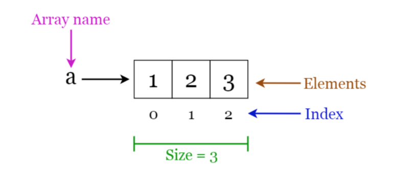
Deque (Python)
Deque (Doubly Ended Queue) in Python is implemented using the module “collections“.
Deque is preferred over list in the cases where we need quicker append and pop operations from both the ends of container, as deque provides an O(1) time complexity for append and pop operations as compared to list which provides O(n) time complexity.
Linked List
Sequential structure that consists of a sequence of items in linear order which are linked to each other. Hence, you have to access data sequentially and random access is not possible.
Linked lists provide a simple and flexible representation of dynamic sets
Elements in a linked list are known as nodes.
Each node contains a key and a pointer to its successor node, known as next.
The attribute named head points to the first element of the linked list.
The last element of the linked list is known as the tail.
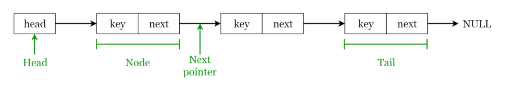
Stacks
Linear data structure that stores items in a
Last-In/First-OutorFirst-In/Last-Out.A new element is added at one end and an element is removed from that end only.
The insert and delete operations are often called push and pop.
Push: Insert an element on to the top of the stack.
Pop: Delete the topmost element and return it.

Queues
Linear data structure that stores items in First In First Out (FIFO).
With a queue the least recently added item is removed first. Enqueue: Insert an element to the end of the queue. Dequeue: Delete the element from the beginning of the queue.
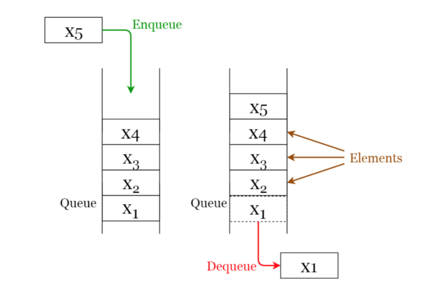
Hash Map
A special function named as the hash function (h) is used to overcome the aforementioned problem in direct addressing.
In direct accessing, a value with key k is stored in the slot k. Using the hash function, we calculate the index of the table (slot) to which each value goes. The value calculated using the hash function for a given key is called the hash value which indicates the index of the table to which the value is mapped.
h: Hash function
k: Key of which the hash value should be determined
m: Size of the hash table (number of slots available). A prime value that is not close to an exact power of 2 is a good choice for m.
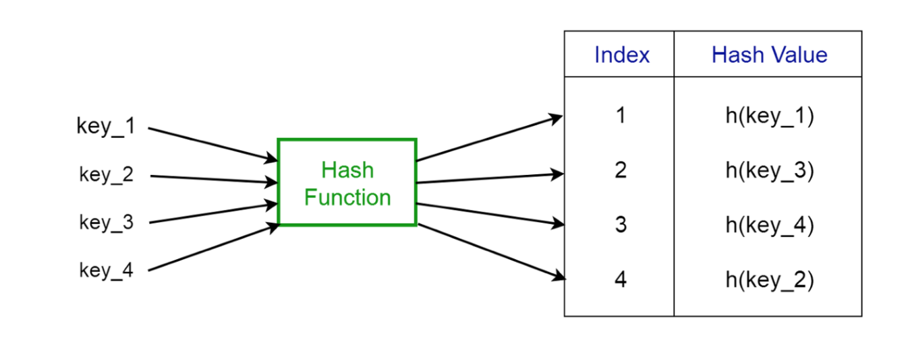
Recursion
Recursion is a method of solving problems that involves breaking a problem down into smaller and smaller subproblems until you get to a small enough problem that it can be solved trivially.
Usually recursion involves a function calling itself.
Notes
A recursive algorithm must have a base case.
A recursive algorithm must change its state and move toward the base case.
A recursive algorithm must call itself, recursively.
Recursive function in Python
When a function is called in Python, a stack frame is allocated to handle the local variables of the function.
When the function returns, the return value is left on top of the stack for the calling function to access.
Even though we are calling the same function over and over, each call creates a new scope for the variables that are local to the function.
Trees
A tree is a hierarchical structure where data is organized hierarchically and are linked together. This structure is different from a linked list whereas, in a linked list, items are linked in a linear order.
A binary search tree (BST), as the name suggests, is a binary tree where data is organized in a hierarchical structure. This data structure stores values in sorted order.
Every node in a binary search tree comprises the following attributes. key: The value stored in the node. left: The pointer to the left child. right: The pointer to the right child. p: The pointer to the parent node.

Depth First Search Trees
Depth-first search is an algorithm for traversing or searching tree or graph data structures.
The algorithm starts at the root node (selecting some arbitrary node as the root node in the case of a graph) and explores as far as possible along each branch before backtracking.
Stpes
Start from the root or any arbitrary node and mark the node and move to the adjacent unmarked node. continue this loop until there is no unmarked adjacent node.
Then backtrack and check for other unmarked nodes and traverse them.
Finally, print the nodes in the path.
Algorithm:
Create a recursive function that takes the index of the node and a visited array.
Mark the current node as visited and print the node.
Traverse all the adjacent and unmarked nodes and call the recursive function with the index of the adjacent node.
Example
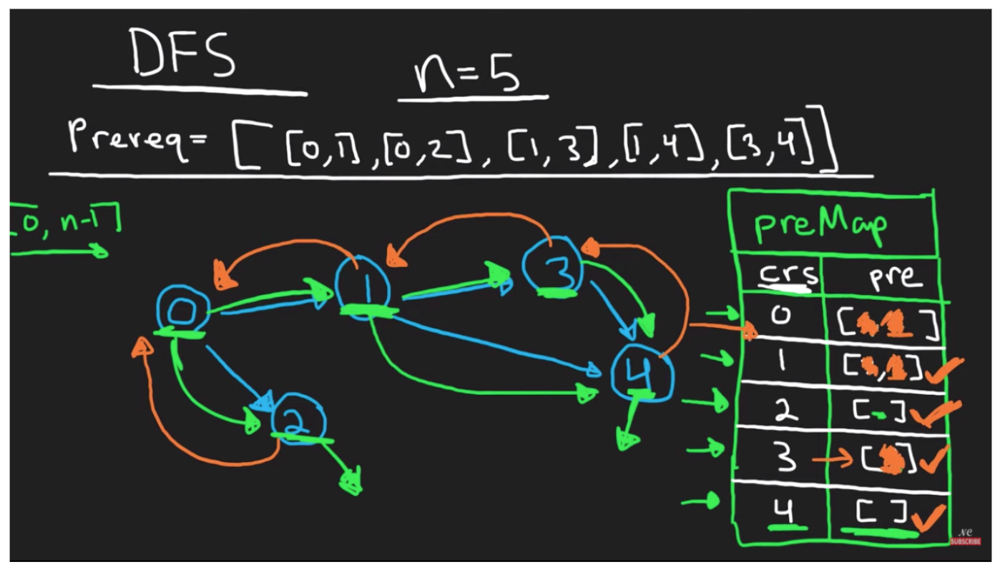 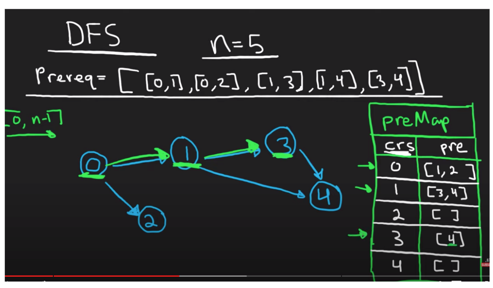
DFS vs BFS

Heaps
A special case of a binary tree where the parent nodes are compared to their children with their values and are arranged accordingly. Only the root is deleted when performing a delete operation.
Min Heap
The key of the parent is less than or equal to those of its children. This is called the min-heap property. The root will contain the minimum value of the heap.
Max Heap
The key of the parent is greater than or equal to those of its children. This is called the max-heap property. The root will contain the maximum value of the heap.
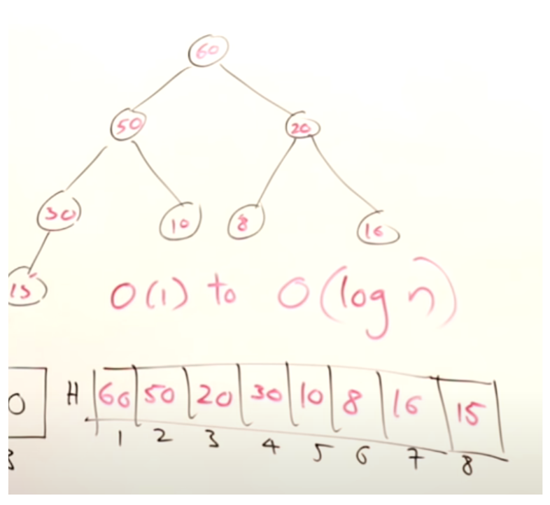
Backtracking
Common algorithm used when you want to “find all possible solution”
Backtracking is an algorithmic-technique for solving problems recursively by trying to build a solution incrementally, one piece at a time, removing those solutions that fail to satisfy the constraints of the problem at any tpoint of time
Main points of Backtracking 1.) Choice: you a make a choice at each step, 2.) Constrains on the choices. 3.) Converge on goals.
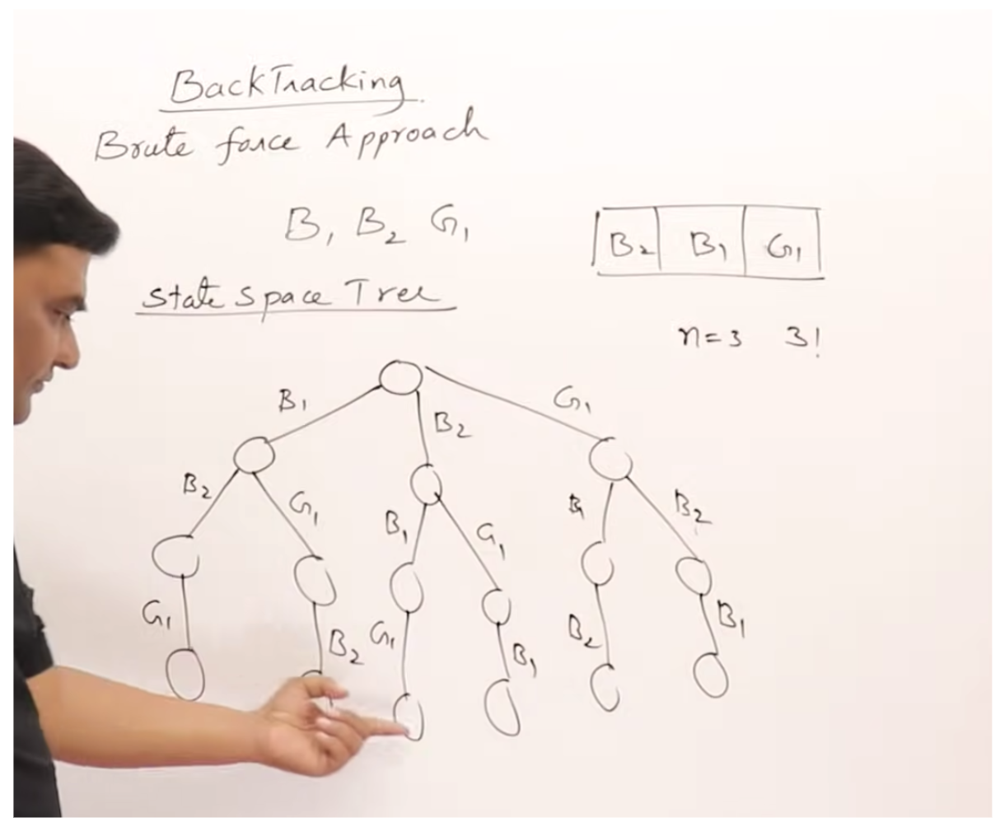
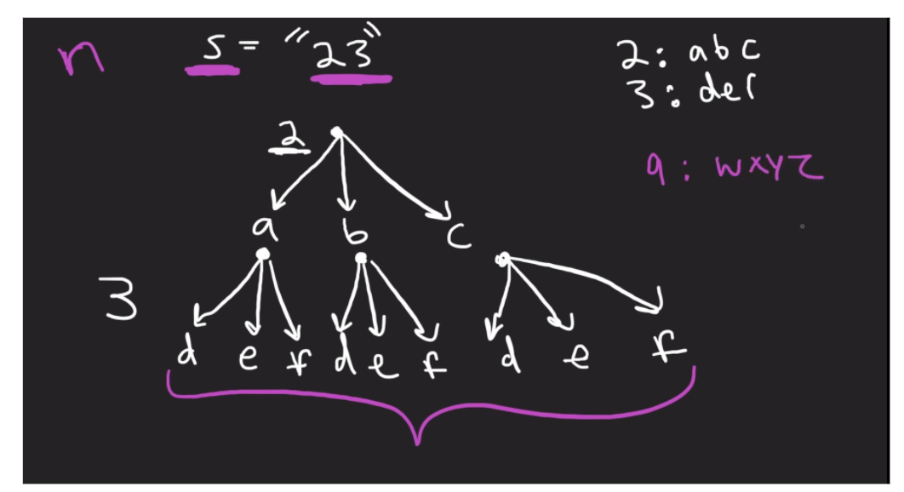
Trie Data Structure
Common task for using this type of data structure is used for is for
Autocompletetasks. See steps below:
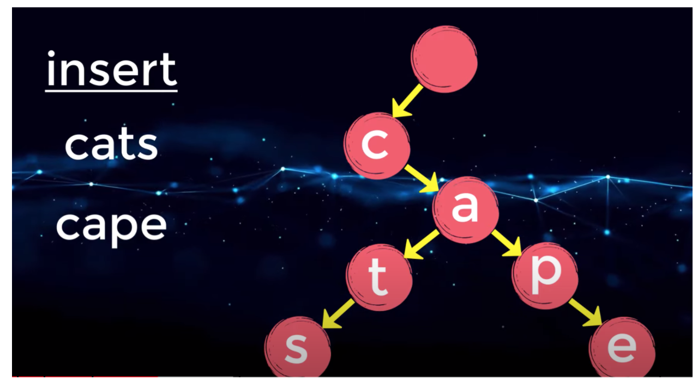
Steps
Search for the given query using the standard Trie search algorithm.
If the query prefix itself is not present, return -1 to indicate the same.
If the query is present and is the end of a word in Trie, print the query. This can quickly be checked by - seeing if the last matching node has isEndWord flag set. We use this flag in Trie to mark the end of word nodes for the purpose of searching.
If the last matching node of the query has no children, return.
Else recursively print all nodes under a subtree of the last matching node.
[Reference](Reference: https://www.geeksforgeeks.org/auto-complete-feature-using-trie/)
References Abdul Bari YouTube Channel NeetCode YouTube Channel